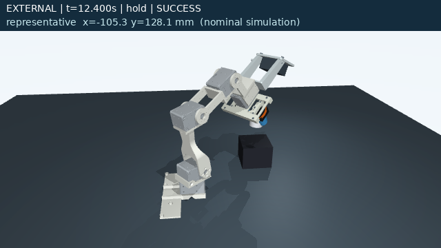
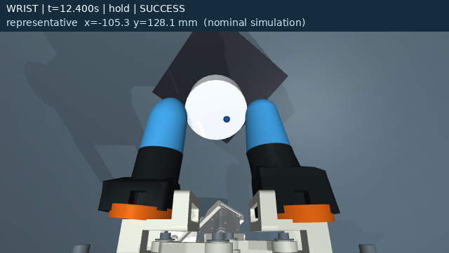
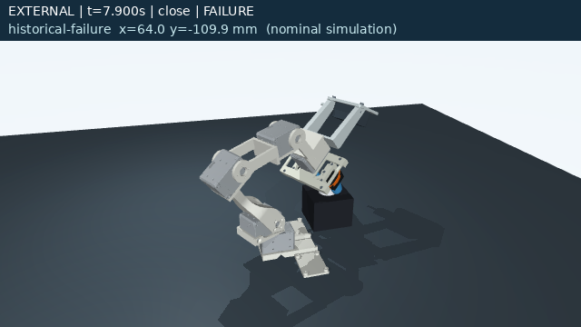

qualification-002: 固定モデル・固定pitch・事前screenで選ばれた100試行中100 SUCCESS、unsafe 0、invalid 0。全2,300,100 sampleと接触ログの独立監査はローカルでPASS。seed 91021261008、335提案から100選択、実行1,186.24秒。
下降時の継続把持は未達: 97/100で両指接触が消失し、89/100は箱への着地前。着地前の最大中心速度0.69846 m/s。保持と最終配置の合格を、穏やかな下降の成功とは扱わない。
先行qualification-001は96成功・1実失敗・3中断不備でINCOMPLETE。元提出者の100rawは未納品。今回の結果は新規実験であり、元の主張の追認ではない。
公開物はコード、技術記録、CSV、代表合成画像。全raw・freeze・動画は別の検証済みローカルbundleに保持。このページとCSVのみで過去の全raw監査を再実行することはできない。
再実行方法・前提 · 公開範囲・来歴 · 技術note · 公開file hashes · 全100試行CSV · 全335提案CSV


